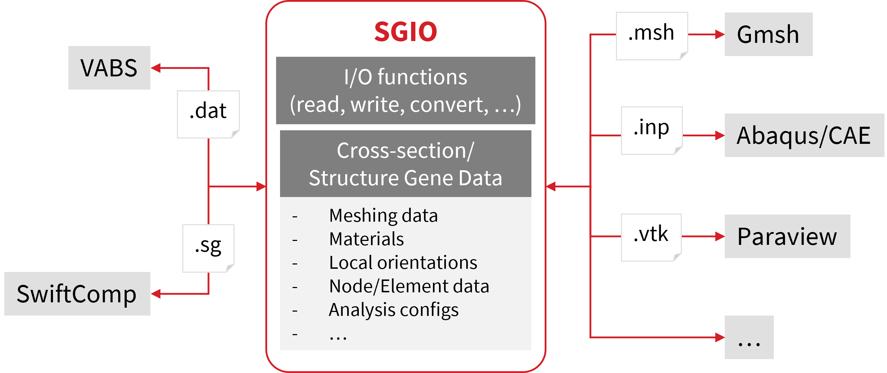

SGIO#
{kind=link}

SGIO#
Structure Gene (SG) I/O
Python package interfacing VABS and SwiftComp. The package is developed based on meshio, which is used for converting meshing data.
Features#
The package can be used to:
Read/write SG data from/to different formats
Convert SG/mesh data between different formats
Read structural properties (effective models) from VABS/SwiftComp output
Read local states (strain/stress/failure) from VABS/SwiftComp output
Read generic finite element models (
sgio.read_fe_model) for multiscale workflowsMerge cross-sections along a span into a single visualization mesh
Plot cross-sections and stiffness matrices (matplotlib / plotly / PyVista)
Create 1D SG from layup input
Supported Data Formats
For complete SG data:
VABS, SwiftComp, Abaqus, Gmsh (SG-on-Gmsh bundle)
For mesh data only:
All formats supported by meshio
A structure gene (SG) is defined as the smallest mathematical building block of a structure.[^1] A cross-section (CS) is a type of 2D SG.
Online documentation
Installation#
Requires Python >= 3.9.
Option 1: Install via pip (Recommended)#
pip install sgio
The 3D mesh preview and ParaView export helpers need PyVista, which is an optional dependency:
pip install sgio[pyvista]
Option 2: Install from Source#
git clone https://github.com/wenbinyugroup/sgio.git
cd sgio
pip install -e .
Or, using uv:
uv sync
Usage#
API#
Example: Read Beam Properties from VABS Output File#
import sgio
model = sgio.read_output_model('my_cross_section.sg.K', 'vabs', 'BM1')
print(model.ea, model.ei22, model.ei33, model.gj)
Example: Convert a Cross-Section from Abaqus to VABS#
import sgio
sgio.convert(
file_name_in='cross-section.inp',
file_name_out='cross-section.sg',
file_format_in='abaqus',
file_format_out='vabs',
model_type='BM2',
)
Command Line Interface#
Example: Convert Cross-Sectional Data from Abaqus (.inp) to VABS Input#
Suppose a cross-section has been built in Abaqus and output to cross-section.inp.
To convert the data to the VABS input (Timoshenko model) cross-section.sg:
python -m sgio convert cross-section.inp cross-section.sg -ff abaqus -tf vabs -m bm2
Complete Options#
usage: sgio [-h] [-v] {build,b,convert,c} ...
I/O library for VABS (cross-section) and SwiftComp (structural gene)
positional arguments:
{build,b,convert,c} Available sub-commands.
build (b) Build 1D structural gene.
convert (c) Convert CS/SG data file.
options:
-h, --help show this help message and exit
-v, --version Show version number and exit.
Convert SG Data#
usage: sgio convert [-h] [--loglevelcmd {debug,info,warning,error,critical}]
[--loglevelfile {debug,info,warning,error,critical}]
[--logfile LOGFILE] [-ff FROM_FORMAT]
[-ffv FROM_FORMAT_VERSION] [-tf TO_FORMAT]
[-tfv TO_FORMAT_VERSION] [-a {h,d,fi}]
[-d {1,2,3}] [-ms {x,y,z,xy,yz,zx}] [-mry {x,y,z}]
[-m {sd1,pl1,pl2,bm1,bm2}] [-mo]
input_file output_file
positional arguments:
input_file CS/SG file to be read from.
output_file CS/SG file to be written to.
options:
-h, --help show this help message and exit
--loglevelcmd {debug,info,warning,error,critical}
Command line logging level.
--loglevelfile {debug,info,warning,error,critical}
File logging level.
--logfile LOGFILE Logging file name.
-ff, --from-format FROM_FORMAT
CS/SG file format to be read from.
-ffv, --from-format-version FROM_FORMAT_VERSION
CS/SG file format version to be read from.
-tf, --to-format TO_FORMAT
CS/SG file format to be written to.
-tfv, --to-format-version TO_FORMAT_VERSION
CS/SG file format version to be written to.
-a, --analysis {h,d,fi}
Analysis type (h=homogenization, d=dehomogenization,
fi=failure).
-d, --sgdim {1,2,3} SG dimension (SwiftComp only).
-ms, --model-space {x,y,z,xy,yz,zx}
Model space.
-mry, --material-ref-y {x,y,z}
Axis used as the material reference y-axis.
-m, --model {sd1,pl1,pl2,bm1,bm2}
CS/SG model type.
-mo, --mesh-only Mesh only conversion.
Note: Node and element numbering is adjusted automatically to meet the requirements of the target format.
Build 1D SG#
usage: sgio build [-h] [--loglevelcmd {debug,info,warning,error,critical}]
[--loglevelfile {debug,info,warning,error,critical}]
[--logfile LOGFILE]
inputfile
positional arguments:
inputfile 1D SG design input file.
Check out the example examples/convert_abaqus_cs_to_vabs for more details.
License#
This project is licensed under the MIT License. See the LICENSE file for details.